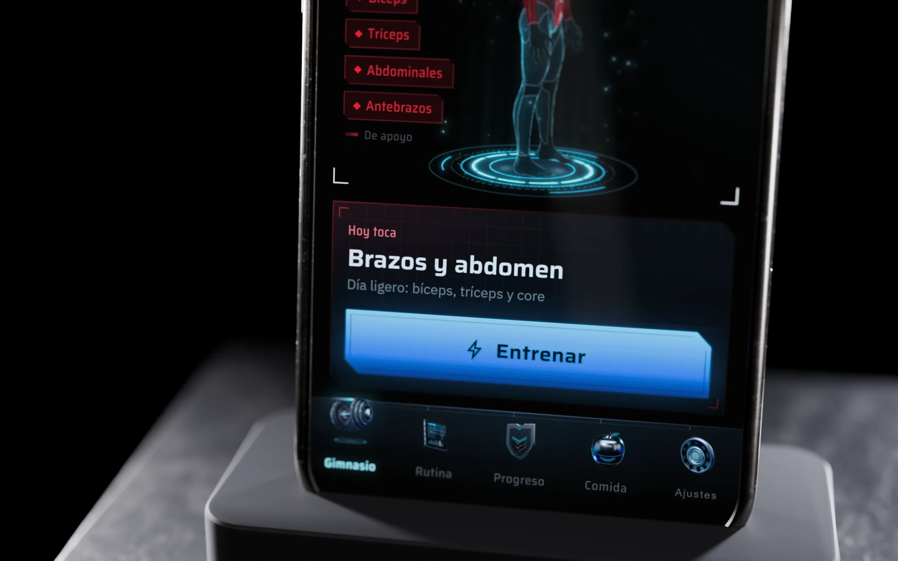
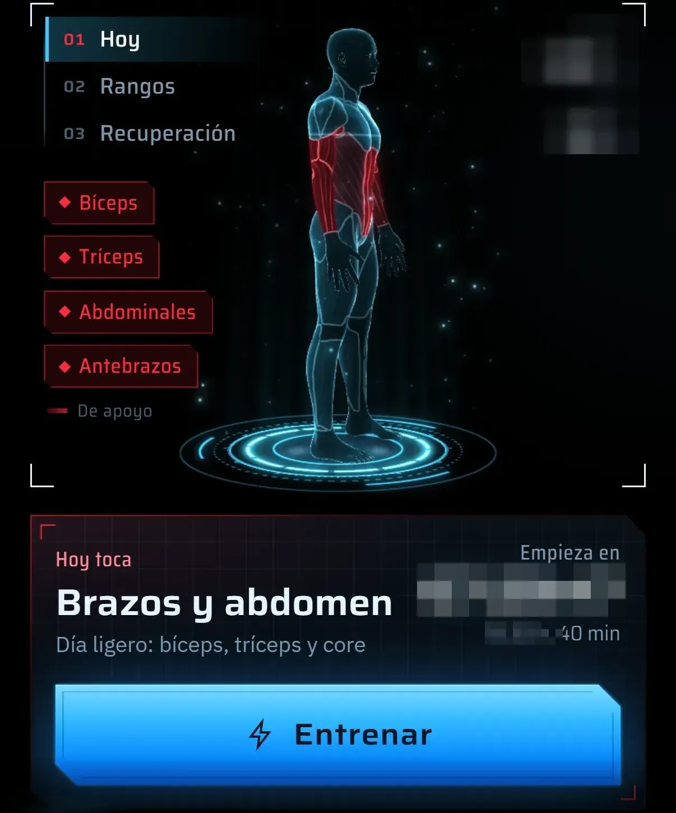
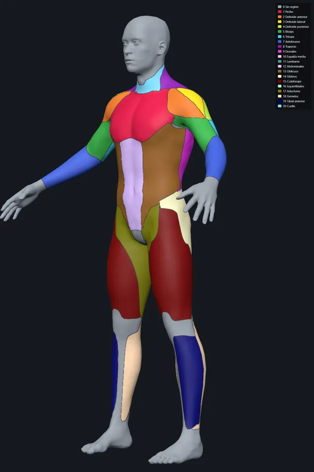
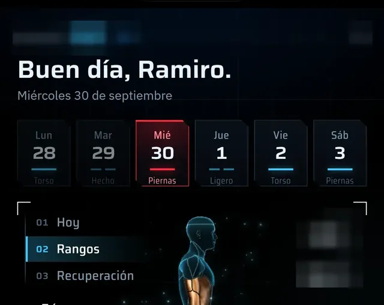
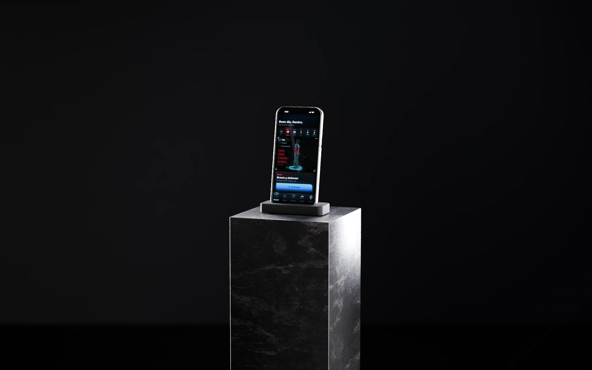

Caso de estudio
App personal · publicada y en uso
Fortal
Una rutina que se arma con el equipo y el tiempo que hay de verdad, y que uso todos los días.
- Qué es
- App web instalable para iPhone que arma la rutina del día sobre un modelo 3D del cuerpo.
- Para quién
- Quien entrena con su propio equipo y poco tiempo; hoy, yo.
- Estado
- Publicada y en uso diario; app personal, fuera de las tiendas.
- Mi rol
- Product owner y usuario
- Período
- Desde fines de septiembre de 2026
- Herramientas
- Desarrollo asistido por IA · React y TypeScript · Three.js · PWA · IndexedDB · Web Push
- Enlace
- Sin enlace público: app de usuario único, se muestra con capturas
El problema
La rutina vivía en las notas del teléfono y el peso se adivinaba en medio de cada serie.
Las apps de gimnasio no saben qué equipo hay en casa ni cuánto tiempo real queda cada día. Sugieren pesos que no se pueden cargar con los discos disponibles y no muestran qué músculo quedó sin trabajar. Quería abrir el teléfono y ver qué toca hoy, cuánto dura y con qué peso.
Recorrido
Con los días, los minutos y el equipo que hay, arma la semana y marca sobre el cuerpo qué toca hoy.
Capturas reales de mi iPhone, con el horario de entrenamiento y los datos corporales pixelados.
-

La semana se arma con los minutos que hay cada día
Elegís días, minutos e intensidad, y arma la semana desde una plantilla o desde cero. Cada día dice qué músculos trabaja, cuántas series lleva y cuánto dura contra el tiempo que tenés: el miércoles, 72 de 75 minutos.
-

Tocar un músculo dice si ya se recuperó
Cada una de las veinte regiones del cuerpo abre su ficha: recuperación, rango, series de la semana y cuándo vuelve a tocar. El pecho de la captura está al 100 %, listo para entrenar, y le toca el viernes.
-

Cada músculo sube de rango a medida que progresa
La vista Rangos pinta sobre el cuerpo el nivel de cada músculo, en una escala que va de bronce a «Mano de Dios». En la captura, el tríceps está en Bronce II y los antebrazos en Bronce IV.


También hace
- Pesos que se pueden armar Calcula discos por lado, dial de mancuernas y pila de placas con el equipo que hay.
- Rutina por intensidad Además de las plantillas, genera la rutina por intensidad (Controlada, Fuerte o Berserker), minutos y días.
- Editor de días Edita cada día y cada ejercicio, con un volumen semanal objetivo por músculo.
- Progreso 1RM estimado, volumen semanal, récords y racha.
- Comida y avisos Buscador de unos 350 alimentos, texto libre («2 huevos y 150 g de arroz») y notificaciones.
- Sin conexión Todo vive en el teléfono y funciona sin señal; un servidor mínimo manda los avisos, guarda la copia de seguridad y hace de puente con Apple Salud.

El día y su sesión
El cuerpo marca los músculos de hoy y la sesión trae los ejercicios que los trabajan.

Hoy toca
Brazos y abdomen
Día ligero: bíceps, tríceps y core
- Bíceps
- Tríceps
- Abdominales
- Antebrazos
Sesión en vivo
- 2Extensión de tríceps en polea3 × 10-15 · RIR 1 · Última al fallo · 1:1515 kg × 15
- 3Curl martillo3 × 10-15 · RIR 1 · Última al fallo · 1:158 kg × 15
- 4Extensión sobre la cabeza con mancuerna3 × 10-15 · RIR 1 · Última al fallo · 1:1514 kg × 15
- 5Crunch en polea alta4 × 10-15 · RIR 1 · Última al fallo · 1 min15 kg × 15
La traducción al inglés aparece sólo en la versión en inglés de esta página.
La pantalla principal pinta en rojo los músculos del día. La sesión en vivo trae cada ejercicio con series, repeticiones en reserva, descanso y el peso sugerido, que siempre se puede armar con los discos y las mancuernas que hay. Mientras dura, la pantalla queda encendida.

Decisiones
Decidí por lo que molesta en medio de una serie.
-
Decidí
Calcular los pesos con el equipo real: discos por lado, dial de mancuernas, pila de placas.
Lo que viUna sugerencia de peso que no se puede cargar en el gimnasio es ruido.
DescartéPedir el peso a mano. Obliga a hacer la cuenta en medio de la serie.
-
Decidí
Un cuerpo 3D con veinte regiones que se pintan según lo que toca hoy y la recuperación.
Lo que viEn una lista de ejercicios no se ve qué músculo quedó sin trabajar.
DescartéUna tabla de series por músculo. El cuerpo se lee de un vistazo; la tabla hay que estudiarla.
-
Decidí
Web app instalable desde Safari, local primero y sin conexión.
Lo que viEl único usuario era yo y quería iterar todos los días.
DescartéApp de tienda con cuentas. Sin revisión de tienda ni servidor obligatorio, cada cambio llega el mismo día.
Cómo lo construí
La construí por fases con agentes de IA, contra reglas de entrenamiento escritas antes de la primera pantalla.
-
Brief y reglas de dominio.
Las reglas de entrenamiento y nutrición (progresión doble, volumen por tiempo disponible, seguridad sin barras de seguridad) se escribieron antes de la primera pantalla.
-
Fases.
Gimnasio, rutina, sesión en vivo, comida: una fase por vez, cada una con su brief y contra esas reglas.
- 01 Gimnasio
- 02 Rutina
- 03 Sesión en vivo
- 04 Comida
La traducción al inglés aparece sólo en la versión en inglés de esta página.
Las cuatro fases de la app, una por vez, cada una con su brief. -
Cuerpo 3D.
Un modelo con veinte regiones musculares pasó por un pipeline propio hasta un GLB liviano.

Salida del pipeline: las veinte regiones. -
Verificación.
Capturas a 1206×2622, la resolución del iPhone, miradas una por una; 391 pruebas unitarias, 85 de servidor y 270 de extremo a extremo como red.
-
Qué saqué para mostrarla.
Pixelé los datos corporales de las capturas: peso y medidas no se publican.

Recorte de una captura publicada: el encabezado, la altura y el peso quedan ilegibles.
Resultado
Publicada e instalada en mi iPhone; la uso todos los días.
746
pruebas automáticas: 391 unitarias, 85 de servidor y 270 de extremo a extremo
El cuerpo 3D tiene veinte regiones musculares, y el buscador de comida, unos 350 alimentos argentinos.
App personal, instalada desde Safari como web app y fuera de las tiendas. No tiene otros usuarios: el perfil está fijo en el código.
Qué falta
- Que la pruebe otra persona: hasta hoy, sólo la usé yo.
- Abrirla a otras personas exigiría cuentas y onboarding.
Qué cambiaría
Separar el perfil del código desde el primer día; hoy está fijo y por eso no hay enlace público.
Galería
El teléfono sobre su columna de mármol, y la pantalla de hoy entera.


Contacto
Escribime si tenés un producto para construir o un proceso para automatizar.
Respondo en el día.